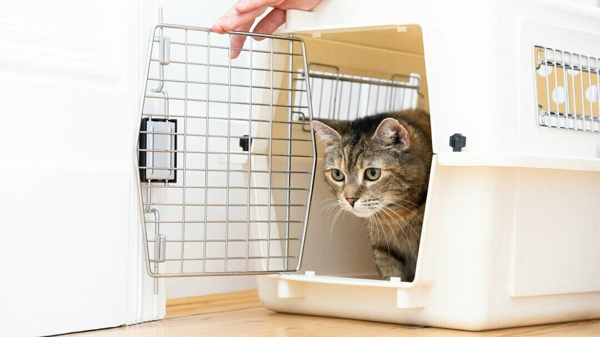

About
VACCINATION

When comes to medicine, there is no one-size-fits-all. There are different type of medicine
to be applied to different stage of ages. Cat vaccines are divided into two types which is
core vaccines and noncore vacines. Core vaccines is the one that is highly recomended
by most vets while noncore vaccines are suggestted by vets depends on the environment
situation.
4 tips Preparation Before
Vaccination
1. Be an Example
Your pet is more likely to be calm if you are. If you are stressed out before the vaccination appointment, your pet will feel your anxiety. High-pitched praise and rushed demeanor can quickly transfer stress to your pet, so try to keep a soft, calm voice and give yourself plenty of time to get to the office.
2. Use Treat to Calm
Depends on some vets , they not allowed the pet to eat heavy meal, then use treats to calm them down so that they did not feel nervous to get vaccination
3. Transport with care
Before going straight to the vets, make sure your furry friends are comfortable with the car trip. You can For example, drive them around the neighborhood . And when they are ready, make sure place the carrier on a flat surface and covered with towel or any items that your cats adore to help them sit comfortably.
4. Partner With Your Vetenarian
Lastly, if allowed, when your furry friend are getting vaccination, make sure you stayed
beside them as they did not familiar enough with vets and also do not forget to
communicating all questions and concerns to your veterinarian to make sure your pet
receive quality care.